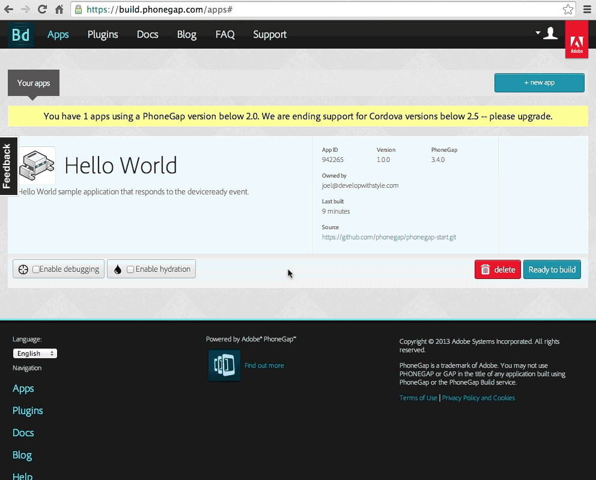
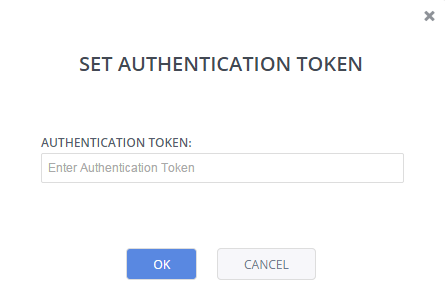
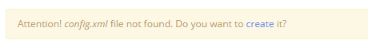
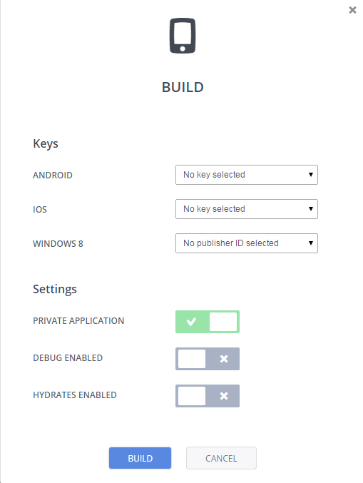
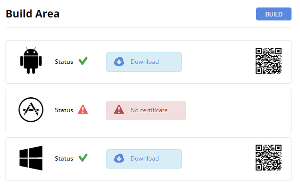

Phonegap¶
You access Codio’s Phonegap:Build features from the Tools->Phonegap menu.
Our Phonegap support provides a comfortable integration with Adobe’s Phonegap Build platform. You should first create an account at http://build.phonegap.com.
Note
At the time of writing, the PhoneGap:Build free plan supports a maximum project size of 50MB and 1000MB or 1GB for paid plans. Account plan details can be found here.
Authentication¶
To access Phonegap:Build from Codio you should set up an Authentication token. This is available in your Phonegap:Build account.
Go to your Phonegap account details and select the Client Application tab. If you do not see an authentication token, click Reset to obtain one.

In Codio, select the Change Token button and paste in your key.

The config.xml file¶
To build apps at Phonegap:Build, a``config.xml`` file is required in the root of your project. If one doesnot yet exist, Codio will ask if you want to create one.

This will create a default file for you and associated image resources for Splash Screen and Icon images in pg-images folder.
Your config.xml needs to contain specific lines for each platform you want to target. For example, to build for iOS, Android and Windows Phone you need to include
<gap:platforms>
<gap:platform name="ios" />
<gap:platform name="android" />
<gap:platform name="winphone" />
</gap:platforms>
If you only want to build for one platform (for example Android) you would only need to include
<gap:platforms>
<gap:platform name="android" />
</gap:platforms>
Useful resources and references for the config.xml file can be found on the Phonegap site:
Build¶
When you are ready to build your app, you press the Build button in the Phonegap Build Area section. Make sure you have created and configured your ``config.xml` file as above.
You should have set up your code signing keys in your Phonegap:Build account (more on keys below) and you should select which keys you wish to use for each platform you defined in your <gap:platforms> tag in the config.xml file.
Keys are configured from the Account > Edit Setting > Signing Keys tab in your Phonegap:Build account.

A bit about Keys¶
Phonegap has very good documentation on how to generate your keys as well as how to configure your Phonegap:Build account.
Note If you do not see anything in the ``Keys`` area, review your ``<gap:platforms>`` content in the config.xml file
Android¶
To build and test, you don’t need to do anything. You can leave the field empty . If you want to deploy a codesigned App, (which you will need to deploy via Google Play) then you need to generate a proper Certificate.
iOS¶
Apple requires both a Codesigning Certificate and a Mobile Provisioning Profile. You need different ones for development and for App Store deployment.
Windows¶
Windows does not require any certificates to build.
Build Settings¶
Private Application¶
Depending on the Phonegap:Build account plan you have, you can build a number of private applications. Check this box if you want to build as a private application. See here for more information on Phonegap:Build plans
Enable Debug¶
Checking this box enables Phonegap Build debugging to allow you to use standard Web Inspector tools available from the PhoneGap Build site to debug PhoneGap apps while they are running on your device.
For more information on this see Remote Debugging Tools
Initiate Build¶
When you have selected keys and any settings, simply press the Build button. Codio now passes all information through to the Phonegap:Build platform, where the build is run in the background.
If the status does not complete in a reasonable time, you can do one of the following
go to your Phonegap:Build account and click the main Apps tab, where you should see your app and its status
check the status of the Phonegap:Build service here
Download your App¶
When the build is completed you can deploy the app to your device in the following ways.
download the native file and manually upload to your device
scan the QR code to download from Phonegap:Build to your device
